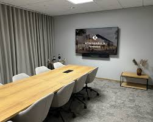
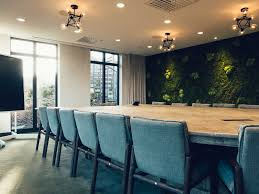
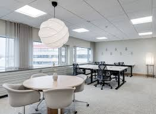

Vi erbjuder flera spännande föreläsningar ledda av experter inom frontendutveckling.
Varje session är interaktiv med möjlighet att ställa frågor och delta i diskussioner.
Dag 1 (Seminarie 1-3)
_______________________________________________________________1. Framtidens Frontend: Ramverkens Nya Roll
Ett seminarium om hur ramverk som React, Vue och Svelte utvecklas i takt med webben. Vi diskuterar trenden mot metaramverk som Next.js och Nuxt, och vad det betyder för prestanda, SEO och utvecklarupplevelse.
2. Designsystem i Praktiken
Hur bygger man ett designsystem som håller över tid? Vi går igenom principer för komponentbibliotek, tokens och skalbarhet – från Figma till kod – med konkreta exempel från större projekt.
3. Tillgänglighet utan Tårar
Ett praktiskt pass om hur du skapar inkluderande gränssnitt som alla kan använda. Lär dig arbeta med ARIA, färgkontraster, tangentbordsnavigering och testverktyg på ett smidigt sätt.
Dag 2 (Seminarie 4-7)
_______________________________________________________________4. Webbprestanda 2.0: Snabbt är det nya snyggt
Fokusera på vad som verkligen gör skillnad för användarupplevelsen – från lazy loading och cachingstrategier till modern bildoptimering och Core Web Vitals.
5. Animationsmagi med CSS och JavaScript
En djupdykning i hur rörelse kan förstärka användarupplevelsen. Vi visar tekniker för mikroskopiska interaktioner, storytelling-animationer och hur du undviker prestandafällor.
6. State Management för Människor
Det finns Redux, Zustand, Recoil, Jotai – men hur väljer man rätt? Ett seminarium som avdramatiserar state management och visar hur du hittar balans mellan enkelhet och kontroll.
7. Från Design till Kod: Den nya samarbetsscenen
Utforska verktyg och metoder som suddar ut gränsen mellan design och utveckling. Vi pratar Figma-plugins, tokens, automatiserad dokumentation och hur design handoff kan bli historia.
Dag 3 (Seminarie 8-10)
_______________________________________________________________8. Frontendarkitektur för Stora Projekt
Hur organiserar man en kodbas med hundratals komponenter och utvecklare? Vi tar upp mönster för monorepos, modulära designsystem och versionshantering av UI-komponenter.
9. AI som Kodpartner i Frontend
Ett seminarium om hur AI förändrar frontendutveckling – från kodgenerering och refaktorering till tillgänglighetsförbättringar och UX-insikter. Vi visar verkliga exempel på hur utvecklare jobbar med AI-verktyg idag.
10. Webben bortom Skärmen: Frontend för Röst, AR och Wearables
Ta reda på hur framtidens gränssnitt ser ut. Vi utforskar hur du bygger upplevelser för röststyrning, AR och smarta enheter – med webben som basplattform.


